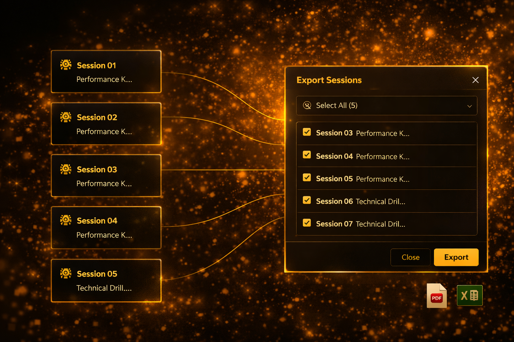
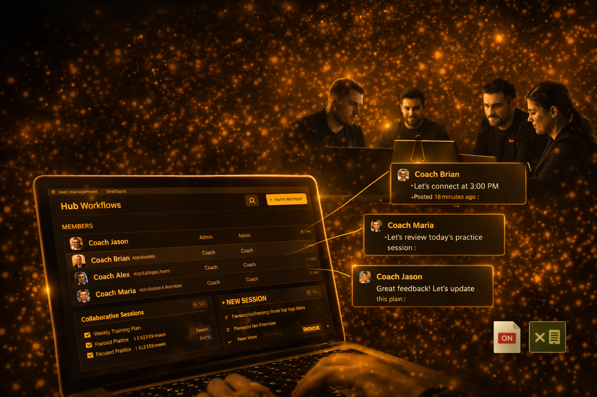
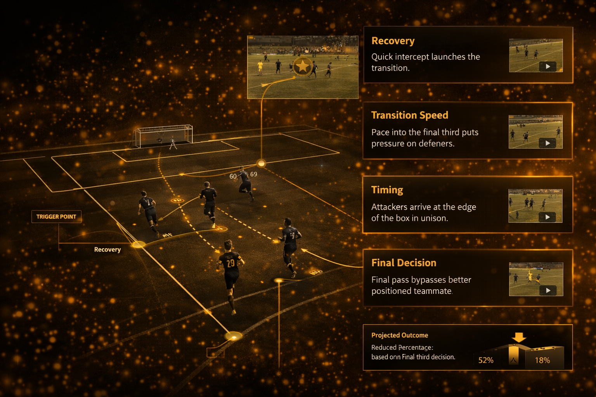
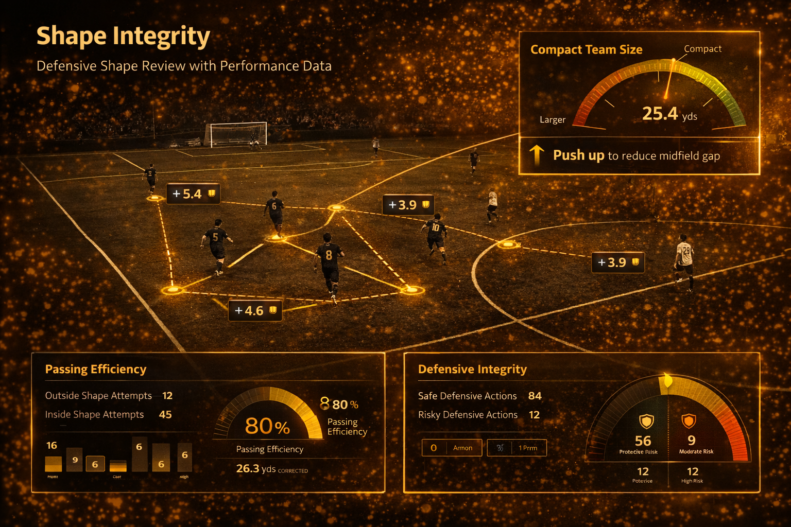
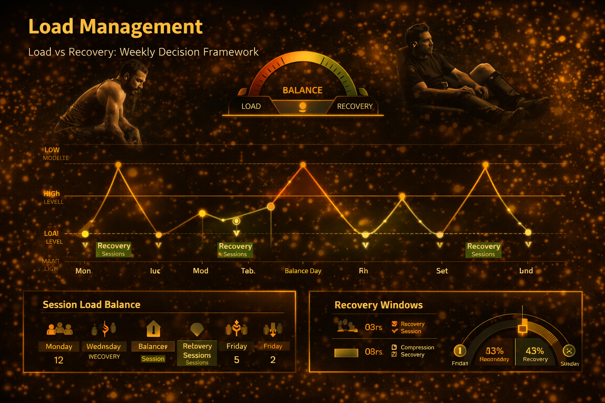
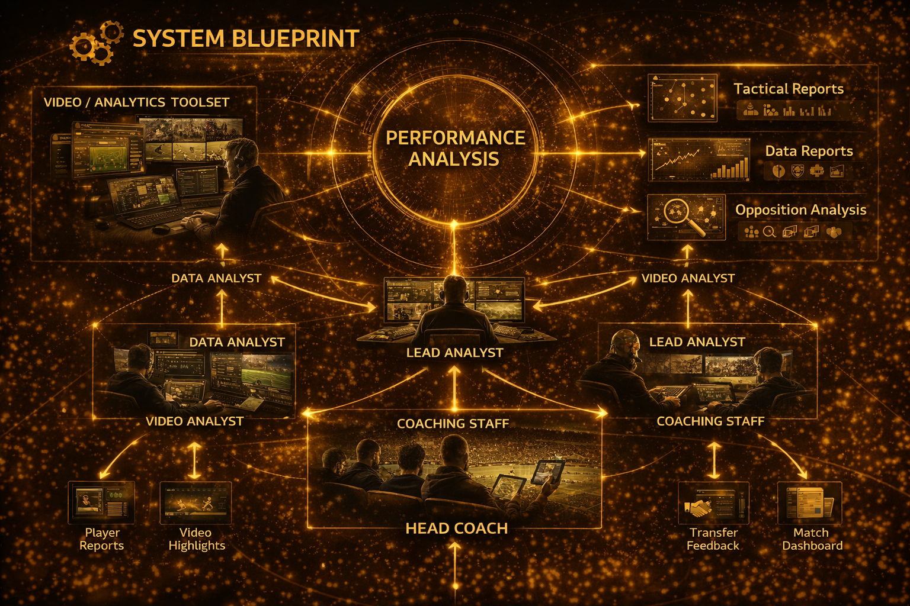

Resources Center
Blog


Coach Education

Focus Session Export
Smarter workflows, faster delivery: introducing Focus Session Export in MatchTracker.

Hub Workflows
Introducing Hub Workflows for collaborative coaching teams in Focus 9.
Performance Analysis
What is performance analysis in elite sports?

Vector 8
Introducing Vector 8, the future of athlete performance.
Performance Insights

Featured Breakdown
Match Analysis: Transition Attack Breakdown
Step-by-step review of transition speed, timing, and final-third decision quality.

Shape Integrity
Defensive Shape Review with Performance Data
Identify spacing gaps and correction rules for compact team structure.

Load Management
Load vs Recovery: Weekly Decision Framework
Balance high-intensity sessions with recovery windows for performance stability.

System Blueprint
What is Performance Analysis in Elite Sports?
How top clubs structure reporting workflows from analysts to coaching staff.
FAQs
Go to your team dashboard, choose the athlete, and click Upload Video. We support common MP4 and MOV formats.
After upload, Roatre automatically processes the video so coaches can start analysis and feedback.
Coaches use timeline tagging, movement review, and technical markers to evaluate each session.
They can compare progress week-to-week and share clear action points with athletes.
Admins can create roles for coaches, analysts, athletes, and parents with controlled access levels.
You can update permissions anytime from team settings.
Yes. Parent access can be enabled by account admins based on your academy policy.
Parents can view approved progress summaries and coach feedback where permissions are granted.
Roatre uses access controls, secure storage practices, and permission-based visibility for athlete data.
Only authorized users can access team and athlete information according to account settings.
Help Center
Find step-by-step guidance for setup, uploads, analysis, and team management.
Account Setup
Create team profiles, assign roles, and configure permissions for coaches, athletes, and parents.
Open GuideUploading Videos
Learn supported file formats, upload steps, and quick fixes for common processing issues.
Open GuideAnalysis Tools
Use tagging, timeline review, and feedback workflows to improve coaching decisions.
Open GuideAthletes & Teams
Manage athlete groups, track progress history, and organize sessions by team category.
Open GuideTroubleshooting
Resolve login, upload, and data sync issues with clear troubleshooting checklists.
Open GuideQuick Start
- Create your team and invite coaches.
- Upload athlete training videos.
- Review clips and tag performance events.
- Share feedback and monitor progress weekly.